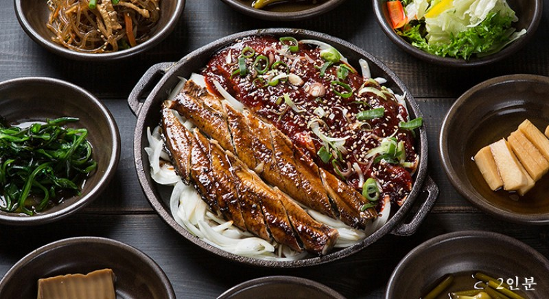

진주장어

50여 년 전 남강다리 아래 강가에서 평상을 놓고 판매한 것을 시작으로, 진주성 입구 쪽에 10여개소의 장어 전문 음식점이 모여서 영업을 하였고, 2016년 진주대첩 광장 조성사업으로 철거되고 지금은 진주성 주변에서 그 명성을 이어오고 있다.
진주장어구이는 바다장어구이와 민물장어구이가 있다.
바다장어구이는 남해바다에서 잡은 싱싱한 붕장어를 연탄불에 초벌구이해서 저온숙성을 시킨 후, 다시 연탄불에 구워내기 때문에 비린내가 없고 그 맛이 담백하며 향이 좋다.
민물장어구이 또한 독특한 향미를 지닌 소스를 발라 두 번 구워 내기에 느끼함이 없고 맛이 뛰어난 특징이 있다.
바다장어구이는 남해바다에서 잡은 싱싱한 붕장어를 연탄불에 초벌구이해서 저온숙성을 시킨 후, 다시 연탄불에 구워내기 때문에 비린내가 없고 그 맛이 담백하며 향이 좋다.
민물장어구이 또한 독특한 향미를 지닌 소스를 발라 두 번 구워 내기에 느끼함이 없고 맛이 뛰어난 특징이 있다.